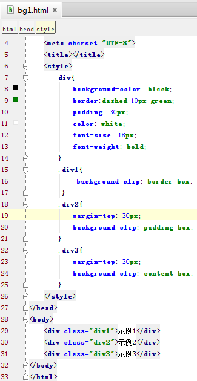

CSS3新功能总结Page3
关键词：CSS CSS3 HTML
CSS3中的新增样式
1.CSS3文字和字体样式
给文字添加阴影text-shadow:(length,length,length,color)
->三个length分别表示(x轴偏移，y轴偏移，阴影模糊程度，颜色)
修改字体种类，保持字体尺寸不变font-size-adjust:数值
->数值=(x-height)/font-size
2.CSS3盒子相关样式
盒子类型display:inline-block
->具有inline的特性，行内显示，又有block特性，可设置宽度
对盒子中容纳不下的内容显示overflow:hidden、overflow:scroll、前两者结合x,y使用
->overflow:hidden 超出盒子的内容隐藏
->overflow:scroll 超出盒子的内容滑动显示
->overflow-x:scroll;overflow-y:hidden 在x轴水平滑动
对盒子使用阴影box-shadow:(length,length,length,color)
->三个length分别表示(x轴偏移，y轴偏移，阴影模糊程度，颜色)
3.背景与边框相关样式
背景新增属性：
background-clip:border-box：背景包含所有区域，包括border
background-clip:padding-box：背景包含padding，不包含border
background-clip:content-box：背景包含内容content，不包padding
新建一个bg1.html
效果如下：
注： background-origin属性可以控制绘制的图片的位置，和clip用法类似
一个元素中显示多个背景图像：
background-image:url(图1),url(图2)：背景引入两张图片
background-repeat:repeat-x,no-repeat：分别对应上面两个图片
background-position:位置
新建一个bg2.html
效果如下：
圆角边框的绘制：
border-radius:a,b,c,d：a,b,c,d分别对应四个圆角度数
使用图像边框：
border-image:url(图片) a,b,c,d：a,b,c,d分别对应九宫格中内容与上右下左四边的距离
（了解九宫格有关知识，明确中部内容格不变，图像边框随着上面参数变化）
4.动画功能（对Page1中转换与动画的补充）
transition功能：
格式：transition:progerty duration timing-function
如：
transition:background-color 1s linear
(transition可并列多个属性,参考Page1)
animation功能：
可定义关键帧，及关键帧中的元素属性值。实现比transition更复杂的动画效果。
可参考Page1中的动画模块，补充：可通过增加hover事件调用anim方法。可实现多个属性值在一个帧中改变， 可加入2D转换方法。
实现动画的方法：
过渡效果时间曲线timing-function包括：linear、ease-in、ease-out、ease
linear:全程匀速
ease-in:由慢到快
ease-out:由快到慢
ease:慢-快-慢